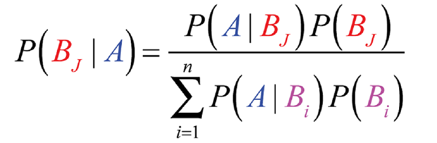

Security & Risk Management
Learning Outcomes:
The formative assessments in this module consist of two collaborative discussions. The summative assessments consist of two reports created as part of group work with other students, plus this module's e-potfolio. This section of the e-portfolio contains these summative assessments as well as other selected artifacts from the module, such as seminar preparation activities, which will contribute to the summative assessment of the e-portfolio. The links below will take you to each artifact. Please note that I have chosen not to post personal reflections here; they will be submitted in a separate document to the module tutor.
Discussion 1 Discussion 2 Seminars Group Work Report 1 Report 2
Discussion 1
This discussion was focussed around a paper by Kovaitė and Stankevičienė, (2019) about the risks to businesses of 'Industry 4.0'. We were asked to consider the following questions:
- What do the authors mean by the term 'Industry 4.0' - give two examples.
- Give two real-world examples of risks that fit into the authors categories.
- Find another journal article that either supports or contradicts the points made in the cited study.
Discussion 2
This discussion explored the Common Vulnerability Scoring System (CVSS) with particular reference to the criticisms raised by Spring et al., (2021). We were asked to consider the following questions:
- What characteristics of CVSS do the authors criticise? Do you agree with the critique? Justify your answer with academic references.
- The authors also discuss a number of alternatives to CVSS. Select one of these alternatives and post an argument for why it should replace CVSS.
Seminars
I was fortunate to be able to attend all of the seminars in this module. I found the preparation required for them interesting, informative and relevant to the summative assessments. The opportunity to have discussions with the tutor and fellow students was invaluable for building my knowledge and understanding of the module content. The material I prepared for several of the seminars can be accessed via the links below. I originally coded a link to be able to view the files in a new browser tab using JSViewer but whilst this worked on a local server, it would not work when hosted by Github. The code is just commented out so it can be seen by inspecting the page source.
- Unit 4: Threat Modelling Exercises
- Unit 6: Security Standards
- Unit 8: Quantitative Risk Modelling

For the Monte Carlo Simulation download the Excel file
- Unit 10: DR Solutions Design & Review
- Unit 12: The future of SRM
Group Work
My group consisted of four members and we were required to produce two reports. Artifacts from our work can be accessed below.- Group contract

- Collated meeting minutes
we also recorded our meetings, but for privacy reasons these are not available here.
Group Report 1: Risk Identification
The group was set the task of writing a risk identifaction report for the digital transformation of a fictional bricks and mortar pet food business 'Pampered Pets'. The report required a risk assessment of the business as it stands at present, suggestions for how to digitally transform the business followed by a risk assesment following transformation. Download or view the report.
My personal contributions to this report were the network toplogy diagrams, parts 1(a) and 2(a) of the brief and the initial proofreading and commenting of the report. The group then communicated effectively via online chat to enable the editor to produce the final version of the report.
Group Report 2: Executive Summary
The group was set the task of undertaking quantitative modelling of possible risks to the supply chain of pampered pets following digital transformation. We were also tasked with creating a Disaster Recovery Strategy within the parameters of RTO and RPO of <1 minute. Download or view the report.
My personal contributions to this report were researching and processing of agricultural production and pricing data and the Monte Carlo simulations of inventory management (these Excel files were submitted as part of the final report as there was too much data to put in the Appendix). I also undertook the role of editor of this report. As in Report 1, the group communicated effectively via online chat and document comments to produce the final report.